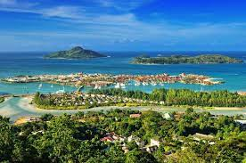

tourism

Tourism is the most important nongovernment sector of Seychelles' economy. About 15 percent of the formal work force is directly employed in tourism, and employment in construction, banking, transportation, and other activities is closely tied to the tourist industry. Tourists enjoy the Seychelles' coral beaches and opportunities for water sports. Wildlife in the archipelago is also a major attraction.[1]The tourist industry was born with the completion of the Seychelles International Airport in 1971, advancing rapidly to a level of 77,400 arrivals in 1979. After slackening in the early 1980, growth was restored through the introduction of casinos, vigorous advertising campaigns, and more competitive pricing. After a decline to 90,050 in 1991 because of the Persian Gulf War, the number of visitors rose to more than 116,000 in 1993. In 1991 France was the leading source of tourists, followed by the United Kingdom, Germany, Italy, and South Africa. Europe provided 80 percent of the total tourists and Africa—mostly South Africa and Réunion—most of the remainder. European tourists are considered the most lucrative in terms of length of stay and per capita spending.[2]
Under the 1990-94 development plan, which emphasizes that the growth of tourism should not be at the expense of the environment, the number of beds on the islands of Mahé, Praslin, and La Digue is to be limited to 4,000. Increases in total capacity are to be achieved by developing the outer islands. To avoid future threat to the natural attractions of the islands, 150,000 tourists per year are regarded as the ultimate ceiling. The higher cost of accommodations and travel, deficiencies in services and maintenance of facilities, and a limited range of diversions handicap Seychelles in attracting vacationers at the expense of other Indian Ocean tourist destinations.[2]